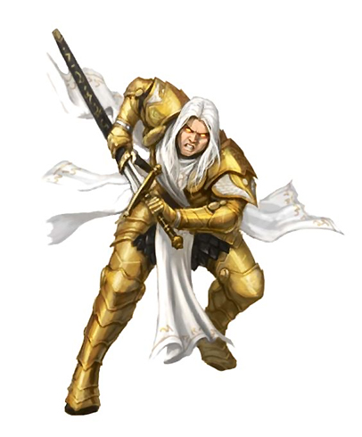
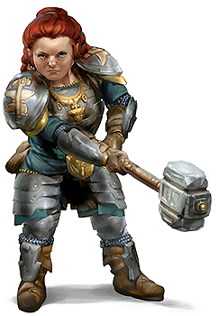
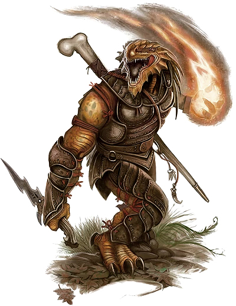
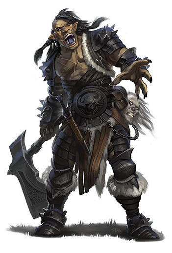
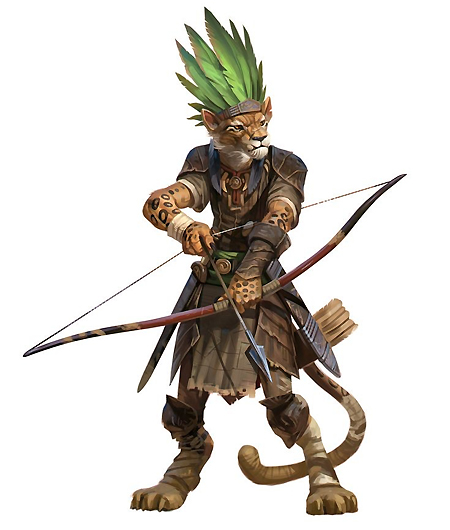
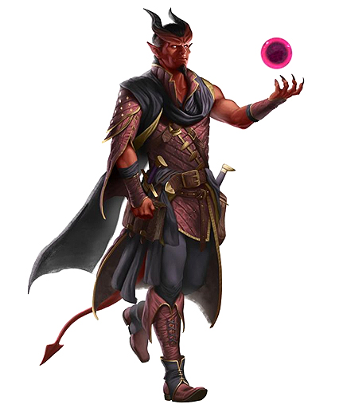

AASIMAR

Descendentes de criaturas celestiais, Aasimares parecem humanos gloriosos e heroicos. Aasimares costumam tentar disfarçar sua linhagem para enfrentar o mal sem chamar atenção.
ANÕES

Reinos ricos em grandiosidade, salões cravejados nas raízes das montanhas, o eco de picaretas e martelos nas minas e nas forjas, dedicação a clã e tradição, e um ódio por orcs e goblins - são essas as heranças de todo anão.
DRACONATO

Nascido de dragões como diz seu nome, os draconatos andam orgulhosamente por um mundo que os recebe como medo e incompreensão.
MEIO-ORC

Meios-orcs são filhos da fronteira, em terras onde orcs e humanos guerreiam ou comerciam. A maioria deles anda pelo mundo fazendo o que é necessário para sobreviver em um mundo que os ignora.
TABAXI

Povo gato vindo de terras distantes, os Tabaxi são motivados pela curiosidade de coletar artefatos, histórias e experiências.
TIEFLING

Ser recebido com encaradas e sussurros, sofrer violência e insulto na rua, ver desconfiança e medo em cada olhar: Essa é a vida dos tieflings, um povo amaldiçoado por um pacto feito gerações atrás com diabos.